Home / Past papers / MLT End Term / this paper
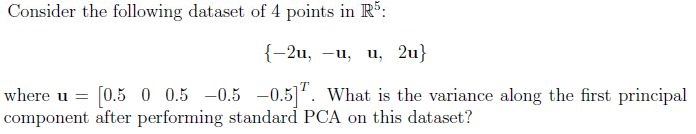
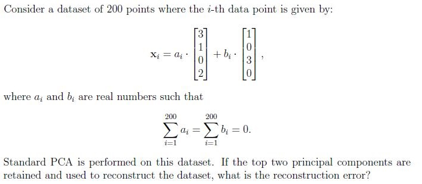
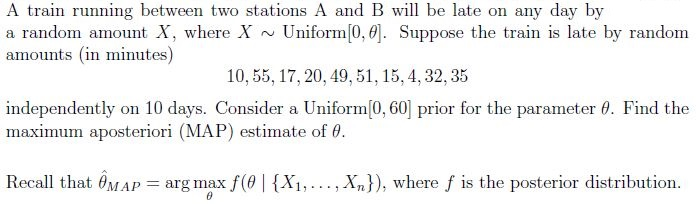
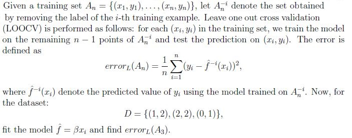
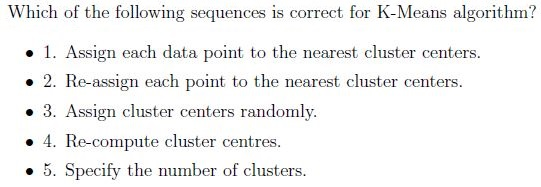
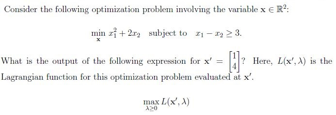
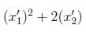
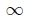
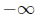
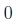
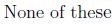
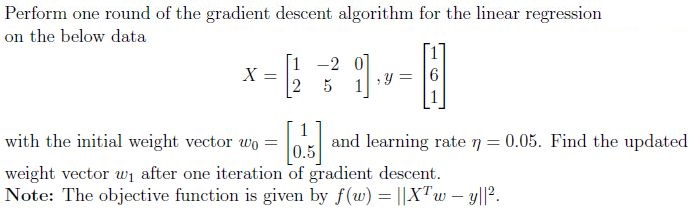
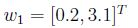
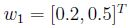
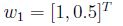
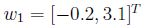
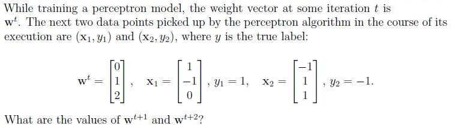
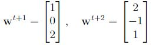
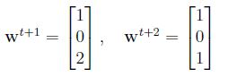
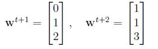
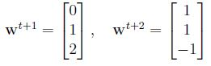
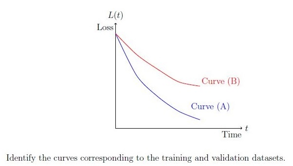
Consider a supervised ML problem where a model is trained using a training dataset, and its performance is evaluated on both the training and validation datasets. During training, the model’s loss is plotted over time for both the datasets. Assume that the loss L(t) is decreasing as the model learns. The following graph shows two curves, Curve (A) and Curve (B), representing the loss for the training and validation datasets, respectively: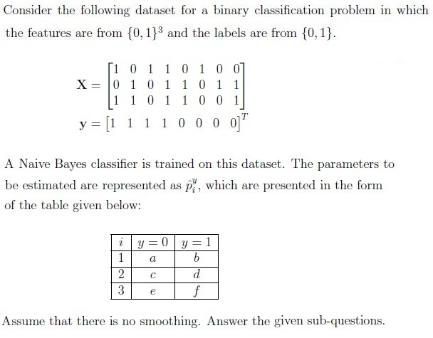
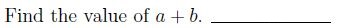
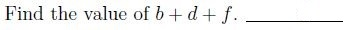
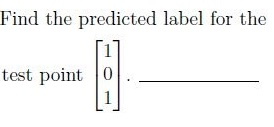
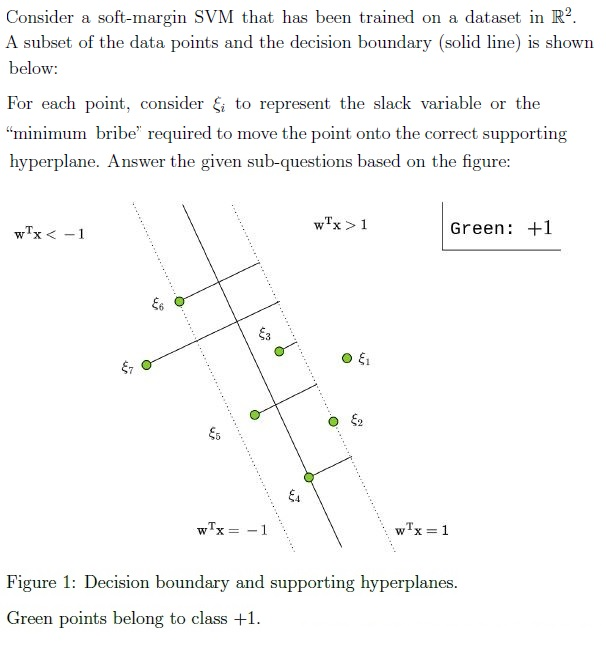
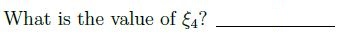
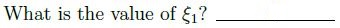
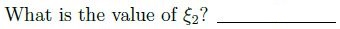
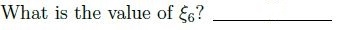
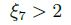
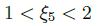
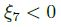
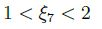
Auto-generated summary from the source site. Handy as a checklist; the lessons above explain each idea from scratch.
Here’s a structured summary of core topics, concepts, principles, and equations essential for the exam, followed by Mermaid knowledge graphs to visualize relationships.
Steps:
Key Equations:
Key Equation:
Threshold Adjustment:
Key Concept:
Error Calculation:
Key Equation:
Algorithm:
For , , :
Example:
Example:
, , .
, .
Key Equations:
Example:
Example:
For , :
Given answers: